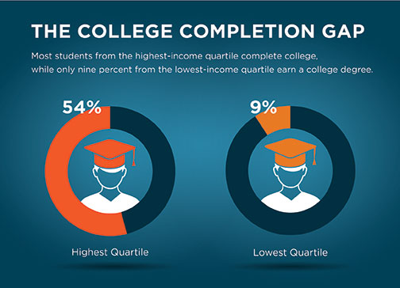

A Great Education Helps to Create Ladders of Opportunity for All Students
A Great Education Helps to Create Ladders of Opportunity for All Students
"America is not a place where chance of birth or circumstance should decide our destiny. And that is why we need to build new ladders of opportunity into the middle class for all who are willing to climb them."
— President Barack Obama, February 12, 2013
America has long worked to make its public schools "the great equalizer," ensuring every child would have the opportunity to join a thriving middle class. Too often, however, poverty endures from generation to generation, as schools work hard to meet the needs of the most vulnerable students. Today, children raised in the bottom fifth of family incomes nationally have a 70 percent chance of remaining below the middle income level as adults. Through "Ladders of Opportunity," the Obama administration will establish comprehensive, coordinated approaches to improving support for the most vulnerable students.
The need
At each stage of their educational lives, students growing up in low-income communities fall behind their peers. They participate in early learning at far lower rates than more affluent students, enter school less ready, and are more likely to drop out. For those low-income students who graduate from high school, they are less likely to go to college, and less likely to graduate. This hurts young people, their families, and their communities, and damages America's economic strength and international competitiveness. To ensure that all students have the opportunity to succeed in college and the workforce, our nation must address the needs of students in low-income communities and low-performing schools, as well as homeless students, children of migrant workers, students in foster care, and other learners who face challenges to success.

The goal
The Obama administration's goal is to build and coordinate systems of support so that America's most vulnerable children succeed from cradle to career, and have a clear path to the middle class.
The plan
President Obama has announced a set of proposals that will create ladders of opportunity and help transform some of our highest-poverty communities and grow the middle class. expand/collapse
The federal Promise Neighborhoods program supports locally-driven efforts to significantly improve the educational and developmental outcomes of children and youth by providing a birth-to-career continuum of rigorous and comprehensive education reforms, effective community services, and strong systems of family and community support—with high-quality schools at the center. The approach underlying the Promise Neighborhoods program has served to inspire a central component of the Obama administration's Promise Zones Initiative, announced in January 2014. This new program will ultimately include up to 20 high-poverty communities. The Promise Zones initiative brings together multiple federal agencies—the Departments of Education, Housing and Urban Development, Commerce, Health and Human Services, Agriculture, and Justice—to ensure that federal programs and resources are focused intensely on communities with high concentrations of poverty.
Five sites have been selected for the Promise Zones designation thus far. Sites will operate in Los Angeles, California; Philadelphia, Pennsylvania; San Antonio, Texas; southeastern Kentucky; and the Choctaw Nation of Oklahoma. Three of the sites also are home to Promise Neighborhoods, and will take lessons learned from the Promise Neighborhoods program to apply promising practices and innovative strategies within the larger population of the Promise Zones. The federal government will work in partnership with local leaders to address federal, state, and local barriers that could impede progress and help them to access the resources and expertise they need to create jobs, leverage private investments, increase economic activity, reduce violence, and expand educational opportunities.
Progress
The U.S. Department of Education is working in close partnership with states and local communities to implement the President's vision for comprehensive education reform, particularly for children and youth who face the greatest barriers to success. States and districts across the country are working to adopt college-and-career-ready standards for all students; ensure that the neediest students learn from effective and prepared teachers; turn around the lowest-performing schools; and build data systems that measure student success and inform teachers and principals about how they can improve their practices. The administration also has taken steps to dramatically increase college access, affordability, quality and completion, especially for low-income students and first-generation college-goers.
Progress in Promise Neighborhoods
Los Angeles Promise Neighborhood, Youth Policy Institute (YPI): Building on previous work, the Los Angeles Promise Neighborhood worked diligently in its first year of implementation in the 19 schools in the Neighborhood. In that first year, the Neighborhood achieved a 303-point Academic Performance Index (API) increase. The average API increase was 18 points, with eight schools increasing by more than 30 points. This 18-point increase compares favorably with the overall statewide average decrease of 2 points. The program's example shows that—in the most distressed communities—targeted, cradle-to-career interventions are making an impact.
Minneapolis Promise Neighborhood, Northside Achievement Zone (NAZ): NAZ has created a unique online tool and data system, called "NAZ Connect." As a virtual service, NAZ Connect creates a pipeline of services for families in the Neighborhood, allows NAZ staff to engage families and students, and helps to align and coordinate programing and services to integrate the cradle-to-career work of partners and stakeholders.
Washington, DC Promise Neighborhood, DC Promise Neighborhood Institute (DCPNI): In the summer of 2013, DCPNI hosted its first Digital Media Academy (DMA). DMA was designed to help prepare students in the DC Promise Neighborhood for careers in the 21st century and to expose students to opportunities that could build their skills and interests. Students received over 130 hours of digital media instruction, engaged in field trips to visit the offices of high-tech companies and museums, and participated in "mentor shadow days" with organizations including the Corporation for Public Broadcasting.
Learn More
- White House fact sheet
- Commentary by Valerie Jarrett, White House Senior Advisor